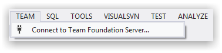
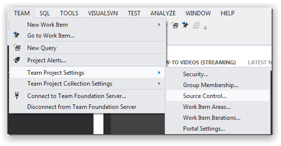
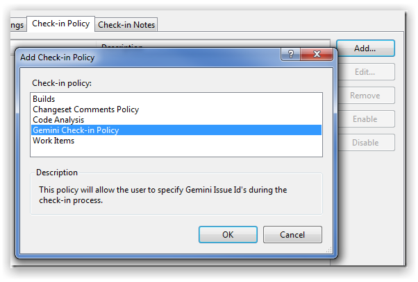
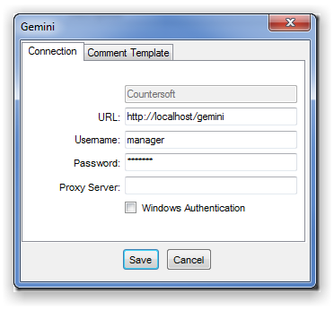
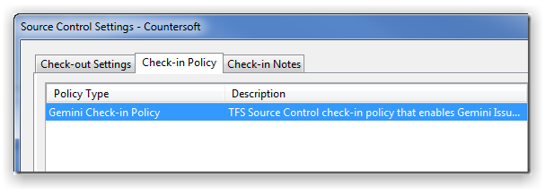
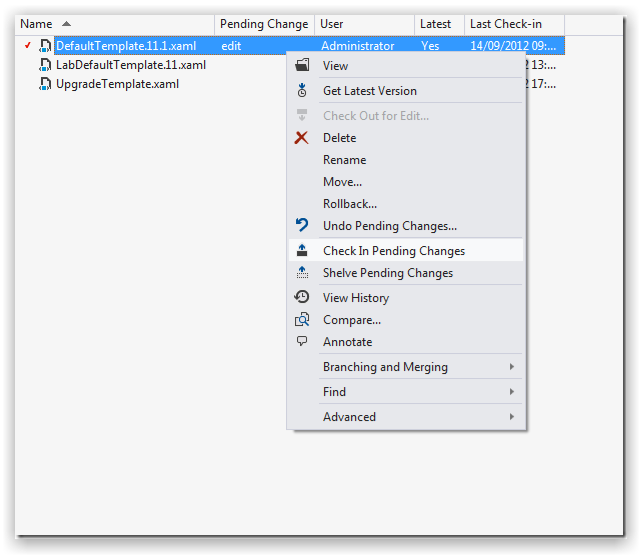
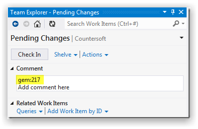

You can install the check-in policy for TFS from the visual studio extension manager or you can download it directly from the Visual Studio Gallery.
Connect to your Team Foundation Server.

Associate the Gemini check-in Policy with your Source Control set up as shown below.

Click "Add" on the Check-in Policy tab and select the Gemini Policy.

Specify your Gemini credentials and press save.

Once the credentials have been provided, you will see the Gemini Check-in Policy listed under the check-in Policies tab.

Right-click the change that you wish to commit and select the 'Check In Pending Changes' option.

When committing your work back to your repository, you can specify a Gemini Issue Id in the Comment box (specify multiple Issue Id’s like gem:218 gem:222 gem:230). You can add a comment in the 'Add comment here' section. Once you have added an Issue Id press Check In.

All commited files and comments appear under Code Review as follows.